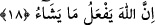

GÖKLERDE VE YERDE OLANLAR
ALLAH’A SECDE EDİYOR
18. Görmez misin ki, göklerde olanlar ve yerde olanlar, güneş, ay, yıldızlar,
dağlar, ağaçlar, hayvanlar ve insanların birçoğu Allah’a secde ediyor; birçoğunun
üzerine de azap hak olmuştur. Allah kimi hor ve hakir kılarsa, artık onu değerli
kılacak bir kimse yoktur. Şüphesiz Allah dilediğini yapar.
“Görmez misin ki,” ey şânı bilmek olan kimse bilmez misin ki, “göklerde olanlar ve
yerde olanlar,” kulların faydası için hareket ederek, doğarak ve batarak “güneş, ay,
yıldızlar,” kaynak suları akıtarak ve madenler vererek “dağlar,” gölgeleri, yüklendikleri
meyveleri ve benzeri hususlarla “ağaçlar,” hayret verici biçimleriyle “hayvanlar ve
insanların birçoğu” tâat ve ibâdet secdesiyle “Allah’a secde ediyor;”
Şu halde her şey, yarattığı, rızık verdiği, sıhhatli ve hasta kıldığı hal üzere Allâh’a
boyun eğer. İyi-günahkar, mü’min ve kâfir bu konuda eşittir.
et-Te’vîlât’ta der ki: “İrfan ehli, kendi irâdeleri ile ibâdet secdesi ederler. Cansız,
aklı ve dînî sorumluluğu olmayan varlıklar, ihtiyaç sebebiyle boyun eğme secdesi
yaparlar.” Kâşifî der ki: “Sözün delâletinden daha fasih olan hâlin delâleti sebebiyle
âlemdeki bütün zerreler Allah Teâlâ’dan huzû ve huşû ederler.
Bak ki şuhûd gözüyle göresin
Cihandaki bütün zerrelerin secde hâlinde olduğunu
İnsanlardan “birçoğunun üzerine de” inkârı ve tâattan yüz çevirmesi sebebiyle “azâb
hak” sâbit “olmuştur.”
Kâşifî der ki: “Bu âyet, âlimlerin ittifakıyla Kur’ân secdelerinden altıncısıdır. el-
Fütûhât’ta bu secdeye “müşâhede ve ibret alma secdesi” denilmiştir ki bütün eşya
içinde insanlardan başkasının bir kısmı zikredilmemiştir. Öyle ise kulun bu dünyada,
ruhlar âlemindekinden daha fazla secde etmeye gayret etmesi gerekir ki birinci
“birçoğu”ndan, yâni secde ehlinden ve mukarrabîn zümresinden olsun. İkinci
“birçoğu”ndan, yâni azâb ve cezâya müstahak olanlardan değil.”